Chemistry in Everyday Life
The principles of chemistry have
been used for the benefit of mankind. Think of
cleanliness — the materials like soaps, detergents,
household bleaches, tooth pastes, etc. will come to your
mind. Look towards the beautiful clothes — immediately
chemicals of the synthetic fibres used for making clothes
and chemicals giving colours to them will come to your
mind. Food materials — again a number of chemicals
about which you have learnt in the previous Unit will
appear in your mind. Of course, sickness and diseases
remind us of medicines — again chemicals. Explosives,
fuels, rocket propellents, building and electronic
materials, etc., are all chemicals. Chemistry has
influenced our life so much that we do not even realise
that we come across chemicals at every moment; that
we ourselves are beautiful chemical creations and all
our activities are controlled by chemicals. In this Unit,
we shall learn the application of Chemistry in three
important and interesting areas, namely – medicines,
food materials and cleansing agents.
Drugs and their Classification:
Drugs are chemicals of low molecular masses (~100 – 500u). These
interact with macromolecular targets and produce a biological response.
When the biological response is therapeutic and useful, these chemicals
are called medicines and are used in diagnosis, prevention and
treatment of diseases. If taken in doses higher than those recommended,
most of the drugs used as medicines are potential poisons. Use of
chemicals for therapeutic effect is called chemotherapy.
Classification of Drugs:
Drugs can be classified mainly on criteria outlined as follows:
(a) On the basis of pharmacological effect:
This classification is based on pharmacological effect of the drugs. It
is useful for doctors because it provides them the whole range of
drugs available for the treatment of a particular type of problem. For
example, analgesics have pain killing effect, antiseptics kill or arrest
the growth of microorganisms.
(b) On the basis of drug action:
It is based on the action of a drug on a particular biochemical process.
For example, all antihistamines inhibit the action of the compound,
histamine which causes inflammation in the body. There are various
ways in which action of histamines can be blocked.
(c) On the basis of chemical structure:
It is based on the chemical structure of the drug. Drugs classified in this
way share common structural features and often have similar
pharmacological activity. For example, sulphonamides have common
structural feature, given below.
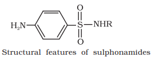
(d) On the basis of molecular targets:
Drugs usually interact with biomolecules such as carbohydrates, lipids,
proteins and nucleic acids. These are called target molecules or drug
targets. Drugs possessing some common structural features may have
the same mechanism of action on targets. The classification based on
molecular targets is the most useful classification for medicinal chemists.
Drug-Target interaction:
Macromolecules of biological origin perform various functions in the
body. For example, proteins which perform the role of biological catalysts
in the body are called enzymes, those which are crucial to
communication system in the body are called receptors. Carrier proteins
carry polar molecules across the cell membrane. Nucleic acids have
coded genetic information for the cell. Lipids and carbohydrates are
structural parts of the cell membrane. We shall explain the drug-target
interaction with the examples of enzymes and receptors.
Enzymes as Drug Target:
(a) Catalytic action of enzymes:
For understanding the interaction between a drug and an enzyme,
it is important to know how do enzymes catalyse the reaction.
In their catalytic activity, enzymes perform two
major functions:
(i) The first function of an enzyme is to hold the substrate for a chemical
reaction. Active sites of enzymes hold the substrate molecule in a
suitable position, so that it can be attacked by the reagent effectively.
Substrates bind to the active site of the enzyme through a variety
of interactions such as ionic bonding, hydrogen bonding, van der
Waals interaction or dipole-dipole interaction.
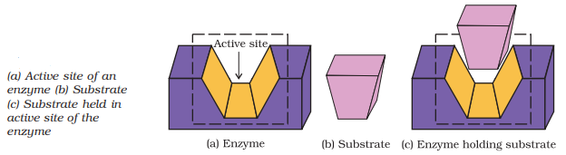
(ii) The second function of an enzyme is to provide functional groups
that will attack the substrate and carry out chemical reaction.
(b) Drug-enzyme interaction:
Drugs inhibit any of the above mentioned activities of enzymes. These
can block the binding site of the enzyme and prevent the binding of
substrate, or can inhibit the catalytic activity of the enzyme. Such
drugs are called enzyme inhibitors.
Drugs inhibit the attachment of substrate on active site of enzymes
in two different ways;
(i) Drugs compete with the natural substrate for their attachment
on the active sites of enzymes. Such drugs are called competitive
inhibitors.
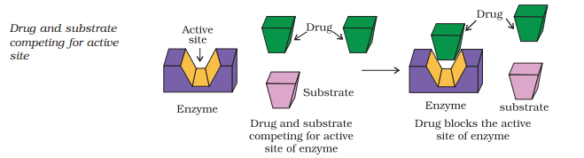
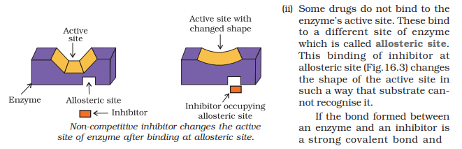
cannot be broken easily, then the enzyme is blocked permanently.
The body then degrades the enzyme-inhibitor complex and
synthesises the new enzyme.
Receptors are proteins that are crucial to body’s communication
process. Majority of these are embedded in cell membranes .
Receptor proteins are embedded in the cell membrane in such
a way that their small part possessing active site projects out of the
surface of the membrane and opens on the outside region of the cell
membrane.
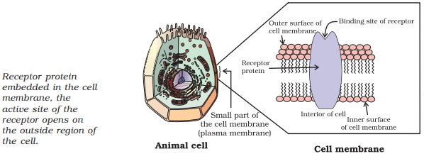
In the body, message between two neurons and that between neurons
to muscles is communicated through certain chemicals. These chemicals,
known as chemical messengers are received at the binding sites of receptor
proteins. To accommodate a messenger, shape of the receptor site changes.
This brings about the transfer of message into the cell. Thus, chemical
messenger gives message to the cell without entering the cell.
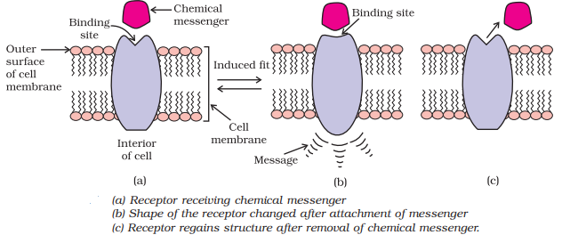
There are a large number of different receptors in the body that
interact with different chemical messengers. These receptors show
selectivity for one chemical messenger over the other because their binding
sites have different shape, structure and amino acid composition.
Drugs that bind to the receptor site and inhibit its natural function
are called antagonists. These are useful when blocking of message is
required. There are other types of drugs that mimic the natural
messenger by switching on the receptor, these are called agonists.
These are useful when there is lack of natural chemical messenger.
3 Therapeutic Action of Different Classes of Drugs:
Antacids:
Over production of acid in the stomach causes irritation and pain. In
severe cases, ulcers are developed in the stomach. Until 1970, only
treatment for acidity was administration of antacids, such as sodium
hydrogencarbonate or a mixture of aluminium and magnesium
hydroxide. However, excessive hydrogencarbonate can make the stomach
alkaline and trigger the production of even more acid. Metal hydroxides
are better alternatives because of being insoluble, these do not increase
the pH above neutrality. These treatments control only symptoms, and
not the cause. Therefore, with these metal salts, the patients cannot be
treated easily. In advanced stages, ulcers become life threatening and its
only treatment is removal of the affected part of the stomach.
A major breakthrough in the treatment of hyperacidity came through
the discovery according to which a chemical, histamine, stimulates the
secretion of pepsin and hydrochloric acid in the stomach. The drug
cimetidine (Tegamet), was designed to prevent the interaction of
histamine with the receptors present in the stomach wall. This resulted
in release of lesser amount of acid. The importance of the drug was
so much that it remained the largest selling drug in the world until
another drug, ranitidine (Zantac), was discovered.
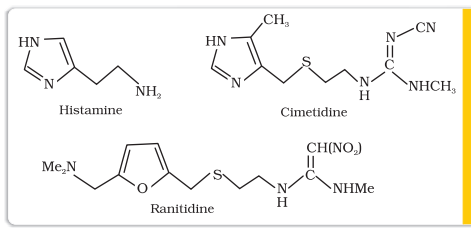
Antihistamines:
Histamine is a potent vasodilator. It has various functions. It contracts
the smooth muscles in the bronchi and gut and relaxes other muscles,
such as those in the walls of fine blood vessels. Histamine is also
responsible for the nasal congestion associated with common cold and
allergic response to pollen.
Synthetic drugs, brompheniramine (Dimetapp) and terfenadine
(Seldane), act as antihistamines. They interfere with the natural action
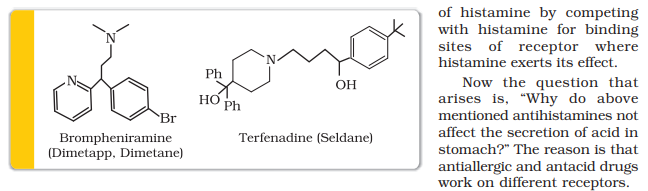
Neurologically Active Drugs:
(a) Tranquilizers:
Tranquilizers and analgesics are neurologically active drugs. These
affect the message transfer mechanism from nerve to receptor.
Tranquilizers are a class of chemical compounds used for the
treatment of stress, and mild or even severe mental diseases. These
relieve anxiety, stress, irritability or excitement by inducing a sense
of well-being. They form an essential component of sleeping pills.
There are various types of tranquilizers. They function by different
mechanisms. For example, noradrenaline is one of the
neurotransmitters that plays a role in mood changes. If the level of
noradrenaline is low for some reason, then the signal-sending activity
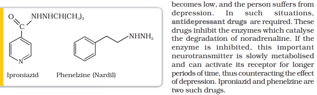
Some tranquilizers namely, chlordiazepoxide and meprobamate,
are relatively mild tranquilizers suitable for relieving tension. Equanil
is used in controlling depression and hypertension.
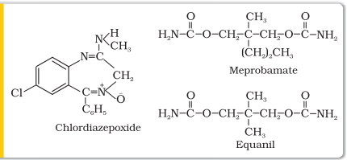
Derivatives of barbituric acid viz., veronal, amytal, nembutal, luminal
and seconal constitute an important class of tranquilizers. These
derivatives are called barbiturates. Barbiturates are hypnotic, i.e.,
sleep producing agents. Some other substances used as tranquilizers
are valium and serotonin
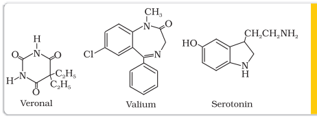
(b) Analgesics:
Analgesics reduce or abolish pain without causing impairment of
consciousness, mental confusion, incoordination or paralysis or some
other disturbances of nervous system. These are classified as follows:
(i) Non-narcotic (non-addictive) analgesics
(ii) Narcotic drugs
(i) Non-narcotic (non-addictive) analgesics: Aspirin and
paracetamol belong to the class of non-narcotic analgesics.
Aspirin is the most familiar example. Aspirin inhibits the synthesis
of chemicals known as prostaglandins which stimulate
inflammation in the tissue and cause pain. These drugs are effective
in relieving skeletal pain such as that due to arthritis. These drugs
have many other effects such as reducing fever (antipyretic) and
preventing platelet coagulation. Because of its anti blood clotting
action, aspirin finds use in prevention of heart attacks.
(ii) Narcotic analgesics: Morphine and many of its homologues,
when administered in medicinal doses, relieve pain and produce
sleep. In poisonous doses, these produce stupor, coma, convulsions
and ultimately death. Morphine narcotics are sometimes referred to
as opiates, since they are obtained from the opium poppy.
These analgesics are chiefly used for the relief of postoperative
pain, cardiac pain and pains of terminal cancer, and in child birth.
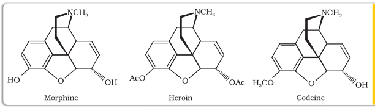
Antimicrobials:
Diseases in human beings and animals may be caused by a variety of
microorganisms such as bacteria, virus, fungi and other pathogens.
An antimicrobial tends to destroy/prevent development or inhibit the
pathogenic action of microbes such as bacteria (antibacterial drugs),
fungi (antifungal agents), virus (antiviral agents), or other parasites
(antiparasitic drugs) selectively. Antibiotics, antiseptics and disinfectants
are antimicrobial drugs.
(a) Antibiotics:
Antibiotics are used as drugs to treat infections because of their low
toxicity for humans and animals. Initially antibiotics were classified as
chemical substances produced by microorganisms (bacteria, fungi and
molds) that inhibit the growth or even destroy microorganisms. The
development of synthetic methods has helped in synthesising some of
the compounds that were originally discovered as products of
microorganisms. Also, some purely synthetic compounds have
antibacterial activity, and therefore, definition of antibiotic has been
modified. An antibiotic now refers to a substance produced wholly or
partly by chemical synthesis, which in low concentrations inhibits the
growth or destroys microorganisms by intervening in their metabolic
processes.
The search for chemicals that would adversely affect invading bacteria
but not the host began in the nineteenth century. Paul Ehrlich, a
German bacteriologist, conceived this idea. He investigated arsenic
based structures in order to produce less toxic substances for the
treatment of syphilis. He developed the medicine, arsphenamine,
known as salvarsan. Paul Ehrlich got Nobel prize for Medicine in
1908 for this discovery. It was the first effective treatment discovered
for syphilis. Although salvarsan is toxic to human beings, its effect on
the bacteria, spirochete, which causes syphilis is much greater than
on human beings. At the same time, Ehrlich was working on azodyes
also. He noted that there is similarity in structures of salvarsan and
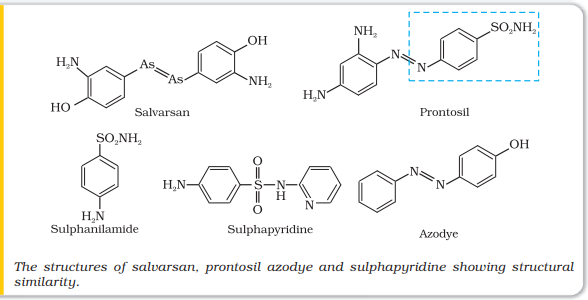
azodyes. The –As = As– linkage present in arsphenamine resembles
the –N = N – linkage present in azodyes in the sense that arsenic atom
is present in place of nitrogen. He also noted tissues getting coloured
by dyes selectively. Therefore, Ehrlich began to search for the
compounds which resemble in structure to azodyes and selectively
bind to bacteria. In 1932, he succeeded in preparing the first effective
antibacterial agent, prontosil, which resembles in structure to the
compound, salvarsan. Soon it was discovered that in the body prontosil
is converted to a compound called sulphanilamide, which is the real
active compound. Thus the sulpha drugs were discovered. A large
range of sulphonamide analogues was synthesised. One of the most
effective is sulphapyridine.
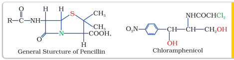
(b) Antiseptics and disinfectants: Antiseptics and disinfectants are also the chemicals which either kill or prevent the growth of microorganisms.
Antiseptics are applied to the living tissues such as wounds, cuts, ulcers and diseased skin surfaces. Examples are furacine, soframicine, etc. These are not ingested like antibiotics. Commonly used antiseptic, dettol is a mixture of chloroxylenol and terpineol. Bithionol (the compound is also called bithional) is added to soaps to
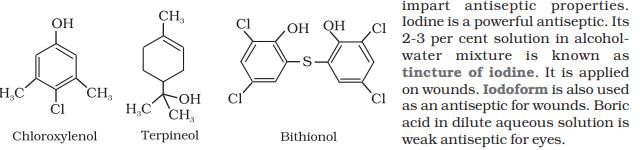
Disinfectants are applied to inanimate objects such as floors, drainage system, instruments, etc. Same substances can act as an antiseptic as well as disinfectant by varying the concentration. For example, 0.2 per cent solution of phenol is an antiseptic while its one percent solution is disinfectant. Chlorine in the concentration of 0.2 to 0.4 ppm in aqueous solution and sulphur dioxide in very low concentrations, are disinfectants.
Antifertility Drugs: Antibiotic revolution has provided long and healthy life to people. The life expectancy has almost doubled. The increased population has caused many social problems in terms of food resources, environmental issues, employment, etc. To control these problems, population is required to be controlled. This has lead to the concept of family planning. Antifertility drugs are of use in this direction. Birth control pills essentially contain a mixture of synthetic estrogen and progesterone derivatives. Both of these compounds are hormones. It is known that progesterone suppresses ovulation. Synthetic progesterone derivatives are more potent than
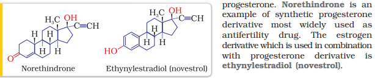
Chemicals in Food:
Chemicals are added to food for (i) their preservation, (ii) enhancing
their appeal, and (iii) adding nutritive value in them. Main categories
of food additives are as follows:
(i) Food colours
(ii) Flavours and sweeteners
(iii) Fat emulsifiers and stabilising agents
(iv) Flour improvers - antistaling agents and bleaches
(v) Antioxidants
(vi) Preservatives
(vii) Nutritional supplements such as minerals, vitamins and amino acids.
Except for chemicals of category (vii), none of the above additives
have nutritive value. These are added either to increase the shelf life of
stored food or for cosmetic purposes. In this Section we will discuss
only sweeteners and food preservatives.
Artificial Sweetening Agents:
Natural sweeteners, e.g., sucrose add to calorie intake and therefore
many people prefer to use artificial sweeteners. Ortho-sulphobenzimide,
also called saccharin, is the first popular artificial sweetening agent. It
has been used as a sweetening agent ever since it was discovered in
1879. It is about 550 times as sweet as cane sugar. It is excreted from
the body in urine unchanged. It appears to be entirely inert and
harmless when taken. Its use is of great value to diabetic persons and
people who need to control intake of calories. Some other commonly
marketed artificial sweeteners are given in the following Table.

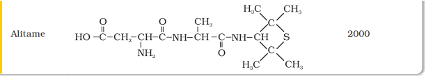
Aspartame is the most successful and widely used artificial
sweetener. It is roughly 100 times as sweet as cane sugar. It is methyl
ester of dipeptide formed from aspartic acid and phenylalanine. Use of
aspartame is limited to cold foods and soft drinks because it is unstable
at cooking temperature.
Alitame is high potency sweetener, although it is more stable than
aspartame, the control of sweetness of food is difficult while using it.
Sucralose is trichloro derivative of sucrose. Its appearance and
taste are like sugar. It is stable at cooking temperature. It does not
provide calories.
Food Preservatives:
Food preservatives prevent spoilage of food due to microbial growth.
The most commonly used preservatives include table salt, sugar,
vegetable oils and sodium benzoate, C6H5COONa. Sodium benzoate is
used in limited quantities and is metabolised in the body. Salts of
sorbic acid and propanoic acid are also used as preservatives.
Cleansing Agents:
In this Section, we will learn about detergents. Two types of detergents
are used as cleansing agents. These are soaps and synthetic detergents.
These improve cleansing properties of water. These help in removal of
fats which bind other materials to the fabric or skin.
Soaps:
Soaps are the detergents used since long. Soaps used for cleaning
purpose are sodium or potassium salts of long chain fatty acids, e.g.,
stearic, oleic and palmitic acids. Soaps containing sodium salts are
formed by heating fat (i.e., glyceryl ester of fatty acid) with aqueous
sodium hydroxide solution. This reaction is known as saponification.
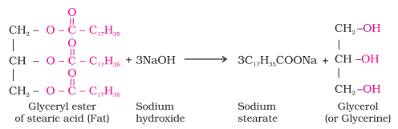
In this reaction, esters of fatty acids are hydrolysed and the soap
obtained remains in colloidal form. It is precipitated from the solution
by adding sodium chloride. The solution left after removing the soap
contains glycerol, which can be recovered by fractional distillation.
Only sodium and potassium soaps are soluble in water and are used
for cleaning purposes. Generally potassium soaps are soft to the skin
than sodium soaps. These can be prepared by using potassium
hydroxide solution in place of sodium hydroxide.
Types of soaps:
Basically all soaps are made by boiling fats or oils with suitable
soluble hydroxide. Variations are made by using different raw materials.
Toilet soaps are prepared by using better grades of fats and oils
and care is taken to remove excess alkali. Colour and perfumes are
added to make these more attractive.
Soaps that float in water are made by beating tiny air bubbles
before their hardening. Transparent soaps are made by dissolving the
soap in ethanol and then evaporating the excess solvent.
In medicated soaps, substances of medicinal value are added. In
some soaps, deodorants are added. Shaving soaps contain glycerol to
prevent rapid drying. A gum called, rosin is added while making them.
It forms sodium rosinate which lathers well. Laundry soaps contain
fillers like sodium rosinate, sodium silicate, borax and sodium carbonate.
Soap chips are made by running a thin sheet of melted soap onto
a cool cylinder and scraping off the soaps in small broken pieces. Soap
granules are dried miniature soap bubbles. Soap powders and scouring
soaps contain some soap, a scouring agent (abrasive) such as powdered
pumice or finely divided sand, and builders like sodium carbonate and
trisodium phosphate. Builders make the soaps act more rapidly.
Why do soaps not work in hard water?
Hard water contains calcium and magnesium ions. These ions form
insoluble calcium and magnesium soaps respectively when sodium or
potassium soaps are dissolved in hard water.
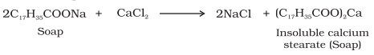
These insoluble soaps separate as scum in water and are useless
as cleansing agent. In fact these are hinderance to good washing,
because the precipitate adheres onto the fibre of the cloth as gummy
mass. Hair washed with hard water looks dull because of this sticky
precipitate. Dye does not absorb evenly on cloth washed with soap
using hard water, because of this gummy mass.
Synthetic Detergents:
Synthetic detergents are cleansing agents which have all the properties
of soaps, but which actually do not contain any soap. These can be
used both in soft and hard water as they give foam even in hard water.
Some of the detergents give foam even in ice cold water.
Synthetic detergents are mainly classified into three categories:
(i) Anionic detergents (ii) Cationic detergents and (iii) Non-ionic
detergents
(i) Anionic Detergents: Anionic detergents are sodium salts of
sulphonated long chain alcohols or hydrocarbons. Alkyl
hydrogensulphates formed by treating long chain alcohols with
concentrated sulphuric acid are neutralised with alkali to form
anionic detergents. Similarly alkyl benzene sulphonates are
obtained by neutralising alkyl benzene sulphonic acids with alkali.
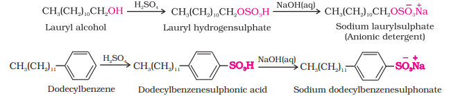
In anionic detergents, the anionic part of the molecule is involved
in the cleansing action. Sodium salts of alkylbenzenesulphonates
are an important class of anionic detergents.
They are mostly used for household work. Anionic detergents are
also used in toothpastes
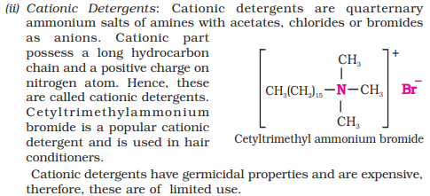
(iii) Non-ionic Detergents: Non-ionic detergents do not contain any ion
in their constitution. One such detergent is formed when stearic
acid reacts with polyethyleneglycol.
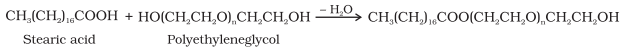
Liquid dishwashing detergents are non-ionic type. Mechanism
of cleansing action of this type of detergents is the same as that
of soaps. These also remove grease and oil by micelle formation.
Main problem that appears in the use of detergents is that if their
hydrocarbon chain is highly branched, then bacteria cannot degrade
this easily. Slow degradation of detergents leads to their accumulation.
Effluents containing such detergents reach the rivers, ponds, etc.
These persist in water even after sewage treatment and cause foaming
in rivers, ponds and streams and their water gets polluted.
These days the branching of the hydrocarbon chain is controlled
and kept to the minimum. Unbranched chains can be biodegraded
more easily and hence pollution is prevented.